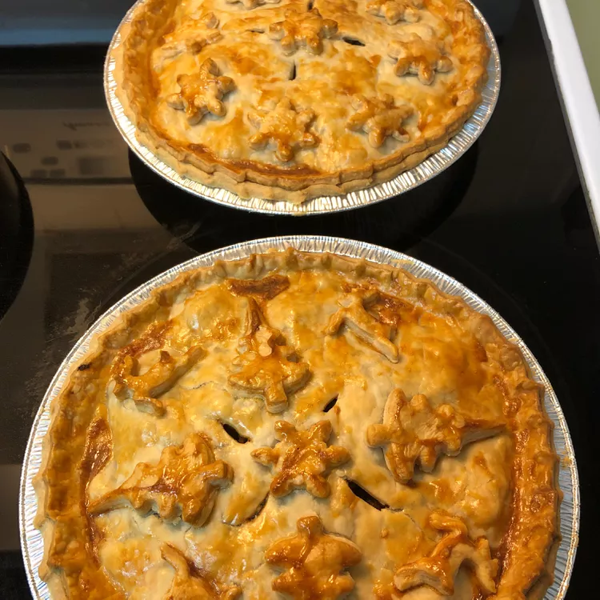

TOURTIERE

Originally from my grandma's recipe box, the secret of this delectable Christmas treasure is found in the ground cloves and chicken seasoning. We've always made our tourtieres en grand (in large quantity), as they freeze great making them a terrific quick fix throughout the busy holiday season!
Ingredients
- 8 pounds ground pork
- 8 pounds ground beef
- 4 cups finely chopped onion
- 6 cups water
- 2 ½ tablespoons salt
Steps
- Preheat oven to 400 degrees F (200 degrees C).
- In a large pot, mix the pork, beef, onion, and water. Season with salt, pepper, allspice, cloves, cinnamon, and chicken seasoning. Bring to a boil. Reduce heat to low and simmer 30 minutes.
- Drain liquid from pot into a bowl. Transfer remaining meat mixture to a separate bowl and chill until ready to use. Place bowl with liquid in the refrigerator and chill 1 hour, or until fat has congealed on the surface.
- Scrape and discard fat from the chilled liquid. Spoon the meat mixture into pie crusts. Add 1 tablespoon of reserved liquid to each pie. (This prevents them from becoming to dry.) Place top crust on top of each pie and pinch edges to seal. Cut slits in top crust so steam can escape.
- Bake in preheated oven until golden brown, about 50 minutes. Serve immediately or freeze until ready to use.